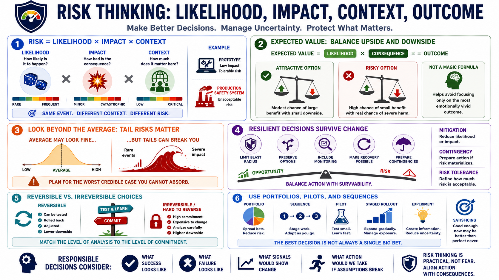

Risk, Expected Value, and Consequences
Connecting to LMS... Progress: in progress

Narration
Risk combines likelihood, impact, and context. A highly likely event with low impact may be manageable. A low-probability event with catastrophic impact may still deserve serious attention. Context decides how much risk matters. The same technical failure might be tolerable in a prototype and unacceptable in a production safety system.
Expected value is a high-level way to think about outcomes by combining likelihood and consequence. If an option has a modest chance of a large benefit and a small downside, it may be attractive. If an option has a high chance of a small benefit and a meaningful chance of severe damage, it may not be. Expected value is not a magic formula, but it helps people avoid focusing only on the most emotionally vivid outcome.
Average expectations are not enough. Tail risks are rare but severe outcomes that can dominate the decision. A plan may look fine on average but still expose the organization to a worst credible case it cannot absorb. Security, operations, safety, and continuity planning all require attention to what could happen at the edge, not just what is most likely.
Fragile decisions fail sharply when conditions change. Resilient decisions preserve options, limit blast radius, include monitoring, and make recovery possible. Mitigation reduces likelihood or impact. Contingency planning prepares action if the risk materializes. Risk tolerance defines how much uncertainty and downside the decision maker is willing and able to accept.
A responsible decision process considers upside, downside, and survivability. It asks what success looks like, what failure looks like, what signals would show the situation is changing, and what action would be taken if assumptions break. Good risk thinking is not fear-based. It is a practical way to keep action aligned with consequences.